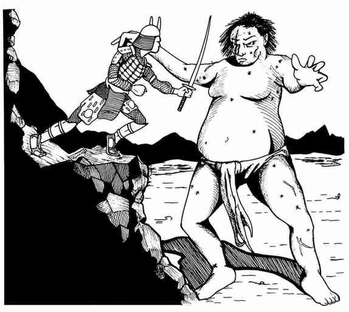

日本神话 · Japanese Mythos
日本神话中的神祇是供信徒效法的“理想类型”。神道教以对自然的敬爱为核心，神社常依树木与庭园而建，入口有鸟居；日本思想中的 Kami（神／灵） 遍及动物、植物、海洋、山岳和自然现象。神社通常朝南，偶尔朝东，不朝北或西。三种普遍神圣象征是镜、剑和完美宝石簇。违背神祇的牧师会被剥夺力量、敏捷或施法能力，但可通过服务重新获得。
天照大神 · Amaterasu Omikami
守序善良强大神，AC −7，400 点生命值，移动无限，魔法抗性 75%，免疫热与火焰；20 级牧师、14 级德鲁伊、20 级魔法师／幻术师、15 级僧侣／吟游诗人。她是与须佐之男、月读并列的三位最强神祇之一，能把接触到的任何东西变成别的东西（神祇才可进行豁免），常把来袭武器或怪物变成小鸟；不使用变形时，拳击每击造成 1–100 点伤害，并持续放出如同光亮术的光。
天津麻罗 · Ama-Tsu-Mara
中立弱等神，AC −4，299 点生命值，魔法抗性 50%，免疫热与寒冷；持 +4 双刃斧，每击 45 点伤害，可立即杀死火焰类生物（允许对死亡豁免）。他一周内可制造任何魔法武器，能制造原料、使用任何位面的武器，并随意进入星界或以太位面；专门照顾铁匠，受特别虔诚祭献的武器有 2% 几率成为 +4 武器。
大黑天（财富与幸运之神） · Daikoku
守序善良弱等神，AC 2，350 点生命值，魔法抗性 20%，持木槌，命中造成 20 点伤害并可将目标缩小一半。他能控制天气、植物和自然动物，常以以太形态巡视物质界；木槌还会永久抵消攻击者使用的杂项魔法物品，并在主人遇险或被魔法控制时把他送到安全地点。
惠比寿 · Ebisu
守序善良弱等神，AC 5，313 点生命值，魔法抗性 50%，位于七重天堂；30 级牧师、10 级圣武士、25 级魔法师、10 级吟游诗人。他以老年男子形象出现，奖赏勤劳者丰收或售货所得；持打击法杖，每击 3–30 点伤害且总能通过豁免。其幸运属性使攻击者只能造成一半伤害，并且通常每隔一次攻击才会命中。
八幡 · Hachiman
混乱善良半神，AC −1，300 点生命值，魔法抗性 35%，位于格拉什海姆；20 级巡林客、15 级刺客、14 级僧侣。他可随意变形，不受 7 级及以下法术和任何幻术影响。投掷匕首会在对不朽者发怒时变成远古红龙；近战使用只有他能举起的 +3 双手剑，兼具锋锐之剑效果并造成 4–40 点伤害。
吉祥天 · Kishijoten
中立善良弱等女神，AC −10，311 点生命值，魔法抗性 100%，每月可召来一名随机的善良生物援助自己。她通常不亲自战斗，而是让受眷顾者自动通过豁免并在攻击时自动命中；在极危险且涉及机会的情形中，也有 2% 几率眷顾勇于冒险者。被逼入战斗时，她的宝石造成 2–20 点伤害。
大国主命 · Oh-Kuni-Nushi
混乱善良半神，AC −4，200 点生命值，魔法抗性 20%，位于格拉什海姆；18 级战士、10 级僧侣／吟游诗人。他能与一切自然生物交谈、治疗并令其返老还童，持红色双手大剑，每击 3–30＋8 点伤害。其牧师必须主动过英雄般的生活，只有独立完成英雄行为后才能晋级。
雷神（雷霆与弓匠之神） · Raiden
中立强大神，AC −8，337 点生命值，魔法抗性 80%，位于风元素位面；能随意变形、制造天气，并把 25 点闪电射到视线尽头。持 +3 黑色大棒，命中造成 2–20＋12 点伤害并解除接触到的魔法武器或护甲；+3 黑色板甲、+4 盾牌、围身风暴和阴影 aura 使他难以被远程武器或低等级法术影响。他还持双倍力量的恐慌鼓，作为弓匠守护者可赐信徒一生制作十支对凡人必杀的箭。
雷光 · Raiko
中立善良英雄，AC −1，180 点生命值，移动 29 英寸；18 级巡林客、12 级刺客、15 级僧侣。他是受神祇眷顾的妖魔猎人，长弓射程与伤害均为普通弓手两倍，宝剑据说比“攻击之蛇”更快，另名赖光（Yorimitsu）。

须佐之男（风暴与海洋之主） · Susanowo
混乱中立强大神，AC −4，400 点生命值，能以雷云飞行、随意变形，召来 1–10 个空气或水元素，并令生物失去飞行能力一周。其 +4 黄色剑每击 3–30＋14 点伤害；攻击落空时会击中下一个最近的敌人。穿黄色 +4 板甲时每轮向十英尺内生物释放 20 点热伤害；在水中魔法抗性为 100%，海中生物会替他挡下攻击。
月读 · Tsukiyomi
中立善良强大神，AC −7，400 点生命值，魔法抗性 30%，位于极乐境；20 级牧师、12 级巡林客、15 级魔法师／幻术师／刺客。他可随意变形，每日五次召来一种飞行生物，并把所见物品召到手中（目标可进行魔法豁免）。+4 长枪每击造成 40 点伤害，且不能被物质界任何力量折断，使他免疫毒素、石化和魔法攻击。
山本达与义家（英雄） · Yamamoto Date 与义家 Yoshi-Iye
山本达 是皇帝之子，守序善良，AC 2，189 点生命值，15 级圣武士；擅长伪装，拥有兼具屠龙与锋锐效果的魔剑。义家 是中立善良的八幡信徒，AC 2，109 点生命值，13 级巡林客兼 5 级僧侣／吟游诗人；弓术传说级强大，箭矢能穿透岩石并造成高于常规的伤害。